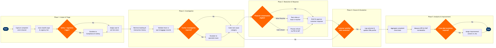

| Step | L4 Step Name | KPI / Target | Pain Point / Risk | Gate |
|---|---|---|---|---|
| 1.1 | Capture complaint from all omni-channel sources | Case capture rate 100%; average intake time <2 min per case | Fragmented channel ingestion creates duplicate cases during IROPS spikes; Sprinklr social volume can exceed 5,000 mentions/hour post-disruption, overwhelming manual deduplication | |
| 1.2 | Auto-classify complaint type and urgency tier | Auto-classification accuracy ≥85%; misclassification rate <5% (validated via monthly QA sample) | Multi-language free-text complaints require NLP models retrained quarterly; incorrect urgency triage causes P1 DOT-reportable cases to sit in general queue breaching 24-hour SLA | |
| 1.3 | Screen for regulatory and safety escalation triggers | 100% of safety-tagged cases escalated within 15 min; DOT disability/discrimination complaints acknowledged within 24 hours (Part 259 mandate) | DOT Part 259 requires written response to disability and discrimination complaints within 30 days — missed SLAs expose airline to civil penalties up to $27,500 per violation per passenger | ⚠ |
| 1.4 | Assign case to team and set SLA clock | First-assignment accuracy ≥92%; reassignment rate <8%; queue assignment time <5 min | Staffing gaps during IROPS cause queue backlog exceeding 10x normal volume; SLA clock runs regardless of staffing levels — unmanaged queues result in mass SLA breaches during weather events | |
| 2.1 | Retrieve booking and full interaction history | History retrieval time <30 sec; data completeness ≥98% of cases with valid PNR | Loyalty tier data sync between Altéa and Salesforce has a 15-min replication lag — agents may not see tier upgrades applied post-flight, causing incorrect resolution offers to premium members | |
| 2.2 | Validate complaint facts against operational records | Validation completion within 4 hours of case creation; evidence attach rate ≥95% of cases | Baggage scan data in SITA WorldTracer is incomplete for interline segments handled by third-party ground handlers — evidence gaps reduce resolution quality and increase re-open rate | |
| 2.3 | Code root cause category for the complaint | Root cause coding accuracy ≥90% (validated via monthly QA review of 5% sample); uncoded case rate <2% | Absence of real-time delay reason codes from OCC forces agents to use estimated codes — downstream analytics are skewed, undermining VoC programs and operational improvement targeting | ⚠ |
| 2.4 | Escalate complex cases to specialist team | Escalation acknowledgment within 2 hours; escalation rate <15% of total monthly cases | Specialist queues during major IROPS reach 10x normal volume — SLA adherence for escalated cases drops below 60% during large-scale disruption events, compounding reputational damage | |
| 3.1 | Determine resolution type and compensation eligibility | Resolution first-contact rate ≥65%; compensation accuracy ≥98% vs. entitlement rules | EU261/2004 and DOT compensation rules differ by route and delay length — agents without automated rule-based guidance misapply entitlements, creating regulatory exposure and inconsistent customer outcomes | ⚠ |
| 3.2 | Post miles or issue electronic voucher compensation | Miles posting time <24 hours; voucher delivery <4 hours; posting error rate <0.5% | Altéa Loyalty API throttles under post-IROPS peak load — delayed miles postings trigger a second wave of inbound contacts from customers who see no credit, effectively doubling case volume | |
| 3.3 | Process cash refund via PSS and finance system | Refund processing time ≤7 business days for credit card purchases (DOT mandate); refund error rate <1% | PSS-to-SAP finance integration runs nightly batch — refunds initiated late in the day risk missing the 7-day DOT credit card refund deadline, exposing the airline to enforcement action | |
| 3.4 | Draft, approve, and send customer response | First response time ≤24 hours (P1), ≤72 hours (P2); post-response CSAT ≥4.2/5.0 | Single QA reviewer approving 200+ responses per day creates bottleneck — grammatical errors and inconsistent tone in templated responses damage brand perception and reduce CSAT scores | |
| 4.1 | Confirm customer acceptance or re-open case | Re-open rate <12%; closure on first resolution ≥65%; external escalation (DOT/BBB) rate <0.5% of cases | Customers escalating to DOT or BBB after case closure without prior follow-up — proactive satisfaction check within 48 hours reduces external escalation rate by approximately 30% | ⚠ |
| 4.2 | Log case outcome and enrich customer CRM profile | Profile update completion rate 100%; CRM data quality score ≥95% (measured via monthly data audit) | Duplicate customer profiles created from multiple booking channels (direct, OTA, GDS) result in fragmented complaint history — agents cannot see prior grievances, causing repeat-issue blind spots | |
| 5.1 | Aggregate complaint data for trend analysis | Dashboard refresh ≤24 hours after week close; root cause coverage ≥95% of closed cases | Inconsistent root cause coding across the agent population (no mandatory controlled vocabulary enforcement) degrades analytics reliability — requires monthly recalibration training sessions to maintain ≥90% accuracy | |
| 5.2 | Measure NPS and CSAT from post-resolution survey | Survey response rate ≥15%; complaint-handling NPS ≥+30; complaint CSAT ≥4.0/5.0 | Survey fatigue from overlapping post-flight, post-complaint, and post-service surveys reduces response rates to <10% in high-volume periods — low sample sizes make category-level NPS statistically unreliable for operational decisions | |
| 5.3 | Route VoC insights to operational improvement owners | ≥80% of top-10 root causes have assigned improvement owner within 5 business days of report publication | Customer Care produces complaint analysis but operational teams (OCC, Crew, Ground Handling) have no formal SLA to respond to VoC findings — insights-to-action loop is broken, allowing chronic root causes to persist quarter over quarter | ⚠ |